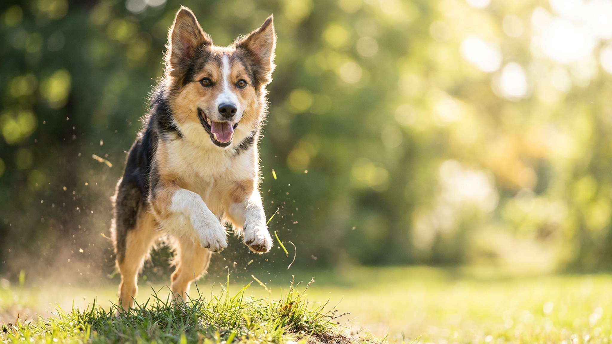

Совместная пробежка кажется идеальным способом выгулять энергичную собаку и заодно размяться самому. Но собака побежит за вами столько, сколько попросите, — даже когда ей уже больно или жарко. Ответственность за дистанцию и темп целиком на хозяине. Разбираем, как начать бегать вместе так, чтобы это укрепляло питомца, а не изнашивало.
🐾 Экономьте на лишних визитах к врачу
Сначала спросите AI-ветеринара в AnimaLife — часто этого достаточно, чтобы понять, нужен ли визит к врачу.
Не каждая собака создана для бега, и возраст здесь решает многое. Щенкам и подросткам регулярные пробежки противопоказаны: пока не закрылись зоны роста костей, ударная нагрузка вредит суставам. У крупных пород это происходит позже, чем у мелких, поэтому со стартом лучше не спешить и заранее обсудить сроки с ветеринаром.
Даже здоровой взрослой собаке нельзя сразу давать длинную дистанцию. Начинайте с чередования быстрой ходьбы и коротких отрезков бега, добавляя нагрузку понемногу от недели к неделе. Мышцы, связки и подушечки лап должны привыкать плавно.
Следите за сигналами усталости: собака начала отставать, тяжело и часто дышит с вываленным языком, садится или ложится, оглядывается на дом. Это просьба остановиться, а не каприз — уважайте её.
🐾 Всё о вашем питомце — в одном приложении
AI-ветеринар, дневник, напоминания о прививках и уходе. Установите AnimaLife — это бесплатно, в Telegram и MAX.
🐾 Понравился разбор?
Подпишитесь на канал — каждый день разбираем по одному тревожному симптому у кошек и собак: что в пределах нормы, а когда пора к врачу. Подпишитесь, чтобы не пропустить разбор, который может спасти здоровье вашего питомца.
Летом главный риск — перегрев и ожоги подушечек. Собака в шубе греется быстрее человека и не потеет, поэтому в жаркий полдень пробежки лучше отменить совсем. Бегайте ранним утром или поздним вечером, по земле и траве, а не по раскалённому асфальту.
Простой тест: приложите ладонь к покрытию на 7 секунд. Если руке горячо — лапам тоже. Всегда берите воду и давайте собаке пить на остановках, а после пробежки осматривайте подушечки на трещины и порезы.
Бег может стать любимым общим ритуалом и отличным выходом энергии — но только если темп и дистанцию задаёт разумный хозяин, а не азарт собаки. Начинайте медленно, читайте сигналы тела и берегите суставы — тогда пробежки прибавят питомцу лет, а не отнимут.
Материал носит информационный характер и не заменяет очную консультацию ветеринара.